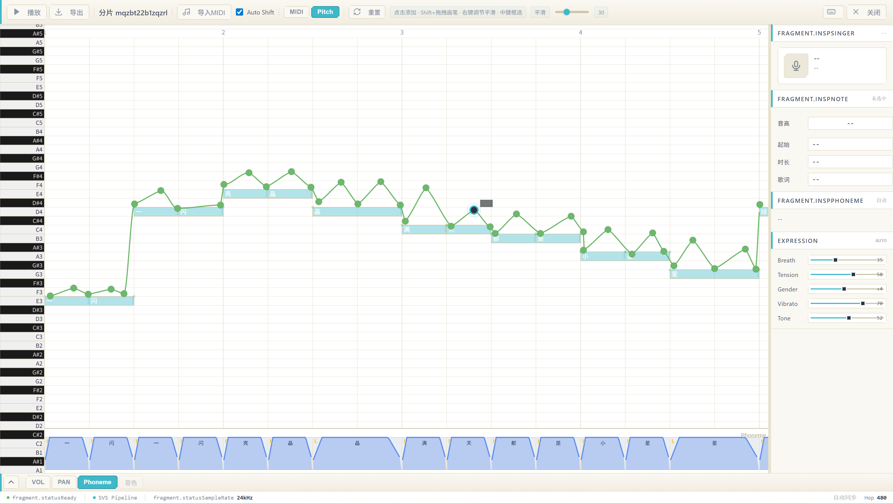
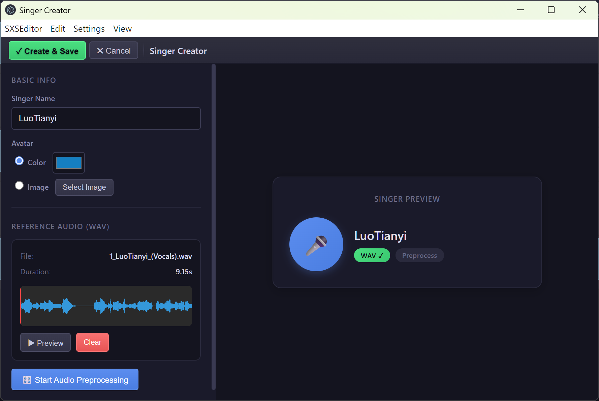

v1.0.0 · 开源项目
桌面端歌声合成，
开箱即用
SXSEditor 是一款开源桌面歌声合成编辑器。基于钢琴卷帘界面进行音符编排与歌词输入，通过神经网络声学模型实现高质量歌声合成。无需联网，无需订阅，本地运行，数据完全自主可控。

多轨时间线 · 歌手编排 · 实时合成
SXSEditor 是一款开源桌面歌声合成编辑器。基于钢琴卷帘界面进行音符编排与歌词输入，通过神经网络声学模型实现高质量歌声合成。无需联网，无需订阅，本地运行，数据完全自主可控。
多轨时间线 · 歌手编排 · 实时合成
从音符编排到歌声导出的完整工作流
SXSEditor 的核心工作流：音符编排 → 歌词输入 → 歌声合成 → 音频导出。以下为各环节的具体能力。
SXSEditor 主界面 — 多轨时间线
在钢琴卷帘界面点击放置音符，拖拽调整音高和时长。支持多轨编排，可同时编写主旋律与和声，并为不同声部分配不同歌手。

双击音符输入拼音或歌词，合成引擎根据上下文自动处理发音。当前支持中文歌词，后续将扩展更多语言。
基于 SoulX-Singer 声学模型，通过 ONNX Runtime 在本地运行推理。无需联网，无需订阅，所有数据完全保留在本地。
上传参考音频，程序自动提取音高特征并生成专属 .sxssinger 歌手文件。可为不同项目使用不同声线。
内置 RMVPE 和 Basic Pitch，可从任意音频中提取 F0 曲线与 MIDI 音符。支持以现有音频的音高信息作为翻唱参考。
编辑完成后可即时合成试听，便于快速迭代调整。无需等待整个项目完成，创作流程更加高效。

合成完成后导出为标准 WAV 文件（24kHz），可直接导入其他 DAW 进行后期混音，亦可直接发布。
支持 NVIDIA、AMD 及 Intel 独立显卡加速推理。无独显环境下亦可使用 CPU 运行，功能不受影响。
基于 Electron 构建，提供原生桌面体验。当前在 Windows 平台经过充分测试，macOS 与 Linux 理论上可编译运行。
包络编辑器支持绘制音高曲线与音量变化，可实现颤音、滑音等效果，或对特定音节进行力度调节。
在设置中可指定用于推理的显卡设备，亦可选择自动检测。笔记本电脑用户可手动切换至 CPU 模式以降低功耗。
160 余个自动化测试用例覆盖核心功能，每次代码变更均执行回归测试，确保功能稳定性与代码质量。
免费开源，开箱即用
包含应用程序及所需运行环境，下载后解压即可使用。无需安装，不写入注册表。
其他方式
Windows 10 / 11（64 位）
Node.js ≥ 18，npm ≥ 9
NVIDIA / AMD / Intel 独显（DirectML 加速）
需下载 SoulX-Singer 模型文件
SXSEditor 的起源与理念
SXSEditor 诞生的初衷是降低歌声合成的使用门槛。现有歌声合成软件普遍存在价格高昂、操作复杂或不开源等问题。本项目旨在提供一个免费、开源、易于上手的桌面端解决方案。
SXSEditor 将钢琴卷帘编辑器与神经网络歌声合成集成于同一桌面应用中。用户无需具备深度学习背景，无需配置运行环境，下载解压即可使用。所有推理均在本地完成，用户数据完全自主可控。
本项目基于以下开源技术构建：
代码组织结构清晰，主要模块如下：
src/main — Electron 主进程，负责窗口管理与进程通信src/renderer — 渲染进程，处理 UI 交互与主进程 API 调用src/editor — 编辑器核心：轨道管理、钢琴卷帘、包络编辑src/inference — ONNX 推理：SVS 流水线、音高检测、MIDI 解析src/audio — WAV 编码与音频处理工具onnx_models — SoulX-Singer ONNX 模型文件test — 自动化测试，160 余个用例当前模型支持的音频参数：
本项目基于 MIT License 开源。允许自由使用、修改和分发，仅需保留原始版权声明。如本项目对您有所帮助，欢迎在 GitHub 上给予 Star 支持。
感谢以下项目与社区的支持：
欢迎任何形式的贡献，包括但不限于 Bug 报告、功能建议与代码提交。请前往 GitHub 仓库提交 Issue 或 Pull Request。提交 PR 前请确保运行 npm test 且所有测试通过。